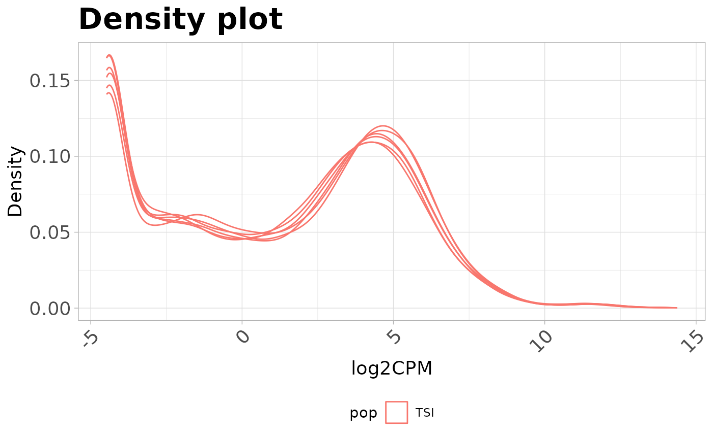
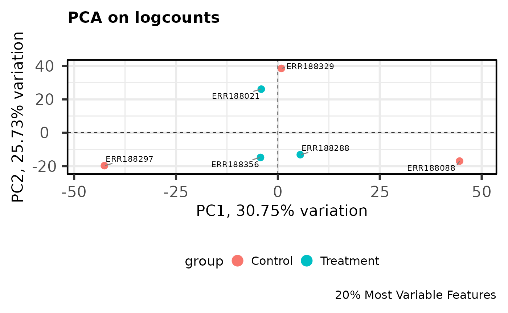
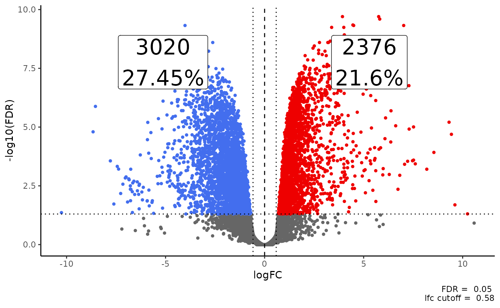
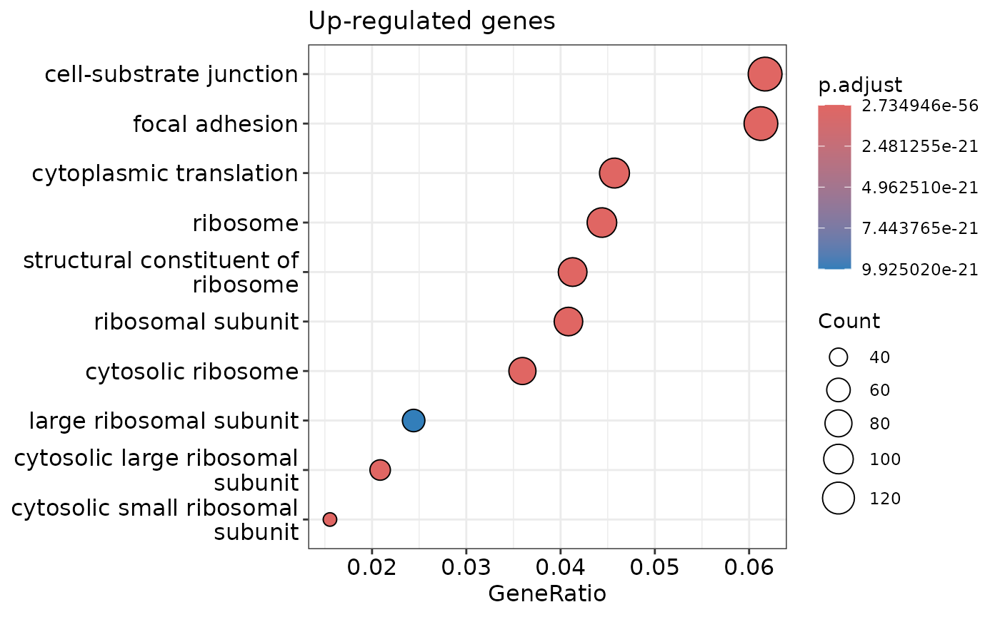
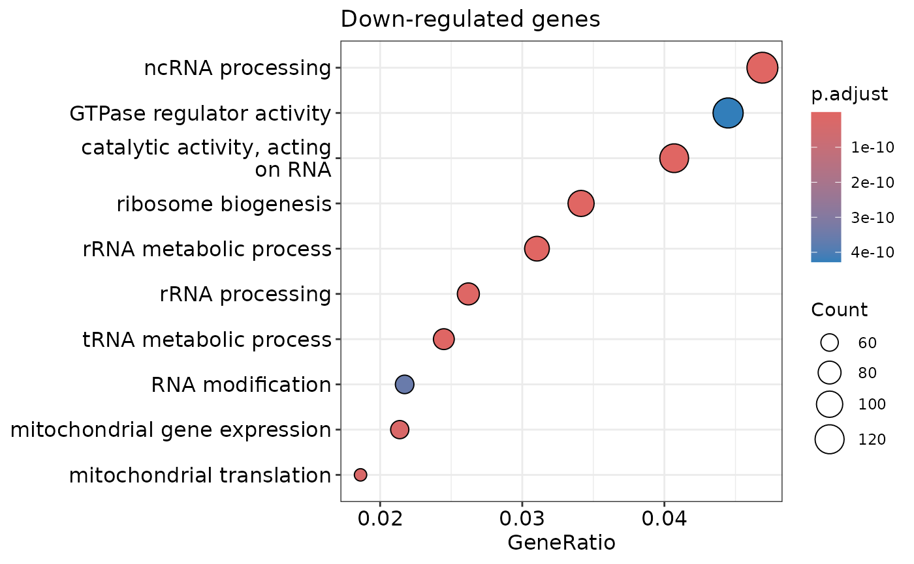
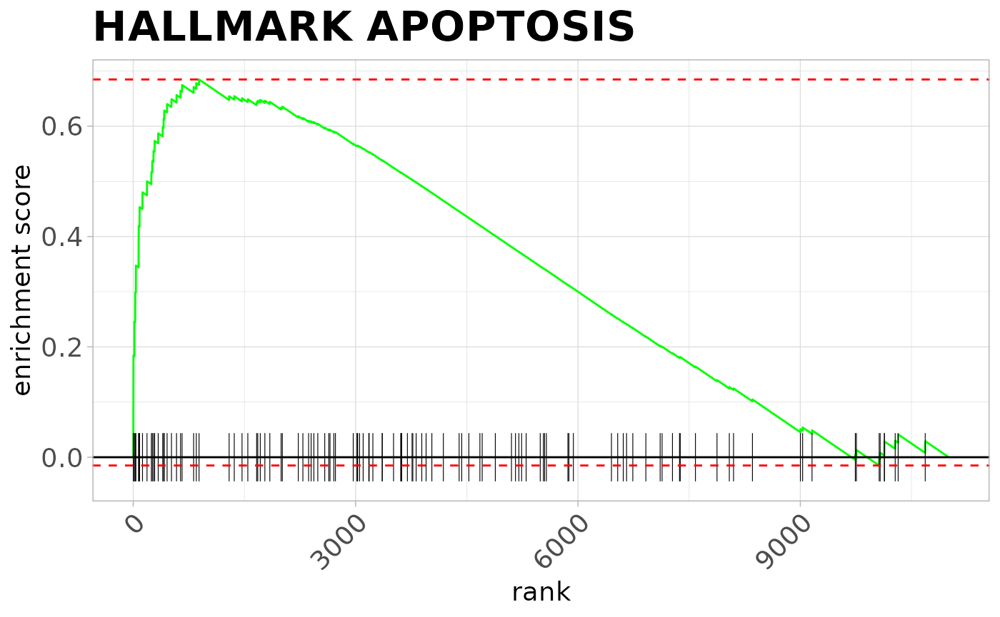

Overview
Below, I will illustrate some of the functions present in the
coriell package by walking through a typical RNA-seq
workflow, starting with checking data for quality and then progressing
through quantifying with Salmon
and performing differential expression analysis with
edgeR.
update (2024-02) Since writing this vignette I have
updated my preferred TE workflow away from REdiscoverTE and towards
using a bootstrapped based quantification method instead. This vignette
still contains many examples of the coriell package and
typical RNA-seq analysis steps.
Checking sequences for quality
The first step in any high-throughput analysis should be to check your reads for quality. FastQC is the de facto tool for this job.
To run fastqc enter the directory where your fastq files
are saved and run:
fastqc *.fastq.gzAdditional arguments can be passed to the program to increase the
number of parallel processes as well as specify the output directory.
e.g. fastqc *.fq.gz --threads 12 --outdir $OUT
An especially useful step following fastqc is to run the
program MultiQC which automatically
scans a directory and summarizes all QC files it finds. If you have many
samples multiqc is an invaluable tools for quickly
examining the overall sequencing quality
Aligning with Salmon
Assuming you have already built or downloaded a Salmon index then performing quantification with Salmon is run with a simple shell script:
#!/usr/bin/env bash
SAMPLE_IDS=sample-ids.txt
FQ_DIR=path/to/fastq/files
OUT_DIR=quants
SALMON_IDX=path/to/salmon_idx
THREADS=48
mkdir -p $OUT_DIR
for SAMPLE_ID in $(cat $SAMPLE_IDS); do
salmon quant \
-i $SALMON_IDX \
-l A \
-1 $FQ_DIR/${SAMPLE_ID}_R1.fq.gz \
-2 $FQ_DIR/${SAMPLE_ID}_R2.fq.gz \
--validateMappings \
--gcBias \
--seqBias \
--threads $THREADS \
-o $OUT_DIR/${SAMPLE_ID}_quants;
doneWhere sample-ids.txt contains the basenames of the fastq files like:
control1
control2
control3
treatment1
treatment2
treatment3Load libraries
suppressPackageStartupMessages(library(coriell))
suppressPackageStartupMessages(library(ggplot2))
suppressPackageStartupMessages(library(tximportData))
suppressPackageStartupMessages(library(tximport))
suppressPackageStartupMessages(library(edgeR))
suppressPackageStartupMessages(library(PCAtools))
suppressPackageStartupMessages(library(clusterProfiler))
suppressPackageStartupMessages(library(org.Hs.eg.db))
suppressPackageStartupMessages(library(fgsea))
suppressPackageStartupMessages(library(msigdb))
suppressPackageStartupMessages(library(ExperimentHub))Differential Gene Expression Analysis
For this sample analysis we will use the included data in the
tximportData package.
# Select the directory where the quants files are stored
dir <- system.file("extdata", package = "tximportData")
# Read in the sample metadata
samples <- read.table(file.path(dir, "samples.txt"), header = TRUE)
rownames(samples) <- samples$run
# List all quant files in dir
files <- file.path(dir, "salmon", samples$run, "quant.sf.gz")
# Name the files by their run ID
names(files) <- regmatches(files, regexpr("ERR[0-9]+", files))
# Read in the tx2gene file that maps transcripts to genes
tx2gene <- read.csv(file.path(dir, "tx2gene.gencode.v27.csv"))In your code, quant files will be saved in separate folders per sample if you followed the example script from above. The command to find these files might look more like:
files <- list.files(
path = "/path/to/OUT_DIR",
pattern = "quant.sf",
recursive = TRUE,
full.names = TRUE
)Import counts with tximport
We often want to perform differential expression not on the
transcript level but the gene-level. This requires summarizing the
counts and applying an offset to adjust for length biases. The easiest
way to import counts with an offset is to use the tximport
function with the “scaledTPM” option.
# Import the counts using tximport
txi <- tximport(
files,
type = "salmon",
tx2gene = tx2gene,
countsFromAbundance = "scaledTPM"
)
#> reading in files with read_tsv
#> 1 2 3 4 5 6
#> summarizing abundance
#> summarizing counts
#> summarizing length
# Extract the counts matrix from the txi object
counts <- txi$countsFilter the count matrix
It is often only of interest to study the protein coding genes. To get the protein coding genes and the gene symbols all in one go it is usually easiest to work with GTF files directly.
The example data was generated using GENCODE v27 annotations on hg19. We can download this annotation file and use it to select the protein coding genes as well as extract other useful information about the genes.
# Download and import the annotations
url <- "https://ftp.ebi.ac.uk/pub/databases/gencode/Gencode_human/release_27/GRCh37_mapping/gencode.v27lift37.basic.annotation.gtf.gz"
gtf_file <- "~/Downloads/gencode.v27lift37.basic.annotation.gtf.gz"
if (!file.exists(gtf_file)) {
download.file(url, gtf_file)
}
gtf <- data.frame(rtracklayer::import(gtf_file))
# Extract all of the protein coding genes from the GTF
protein_coding <- gtf[gtf$type == "gene" & gtf$gene_type == "protein_coding", "gene_id"]
# Removing trailing ids if present
protein_coding <- unique(gsub("_[0-9]+$", "", protein_coding))
# Filter the count matrix for protein coding genes
counts <- counts[rownames(counts) %in% protein_coding, ]Checking the library distributions
It is always good to check to see if the sequenced libraries are
behaving as expected. The coriell package has a few
diagnostic plots to help with this.
The first diagnostic plot is the plot_boxplot() function
which will plot boxplots for each sample in a matrix. Importantly, the
plot_boxplot() function also allows the user to examine the
relative log expression values for each sample in order to assess
technical factors that may be influencing each library. RLE plots should
show sample distributions centered on zero with similar distributions of
outlier values.
# Calculate the log2 counts per million for each sample
logcounts <- edgeR::cpm(counts, log = TRUE, prior.count = 1)
# Show the distribution of the logcounts for each sample
plot_boxplot(logcounts, metadata = samples, fillBy = "pop", rle = TRUE,
outlier.shape = NA) +
labs(title = "Relative Log Expression",
x = "Sample",
y = "RLE") +
scale_y_continuous(limits = c(-1.5, 1.5)) +
theme_coriell()
#> Warning: Removed 5292 rows containing non-finite values
#> (`stat_boxplot()`).
Another diagnostic plot is the plot_distribution()
function. This function creates a density plot for each sample allowing
the user to view the density of the counts for all samples.
plot_density(logcounts, metadata = samples, colBy = "pop") +
labs(title = "Density plot",
x = "log2CPM") +
theme_coriell()
Another useful diagnostic plot is to view the euclidean distances for
the unscaled counts between samples. This plot gives you an idea of how
similar samples are to each other on an absolute level. This can be
accomplished with the plot_dist() function.
plot_dist(counts, metadata = samples[, "pop", drop = FALSE])
Analysis with edgeR
Downstream analysis of count data can be performed in
edgeR. Since this example data does not contain any actual
groups i will create artificial groups only for the purpose of
demonstrating the steps involved in a simple differential expression
analysis.
# Add an arbitrary group factor to the samples
samples$group <- gl(2, 3, labels = c("Control", "Treatment"))
# Specify group based design
design <- model.matrix(~ 0 + group, data = samples)
colnames(design) <- gsub("group", "", colnames(design))
# Import counts into edger
y <- DGEList(counts, samples = samples, group = samples$group)
# Filter for expression
keep <- filterByExpr(y, design)
y <- y[keep, ]
# Calculate normalization factors
y <- calcNormFactors(y, method = "TMM")
# Estimate genewise dispersion
y <- estimateDisp(y, design = design, robust = TRUE)
# Fit the model
fit <- glmQLFit(y, design, robust = TRUE)
# Specify contrasts to test
con <- makeContrasts(TvC = Treatment - Control, levels = design)
# Test for differential expression
qlf <- glmQLFTest(fit, contrast = con[, "TvC"])
# Extract the test results as a data.frame
qlf_df <- edger_to_df(qlf)PCA
We can perform Principal Components Analysis on the normalized
logcounts using functions from edgeR and
PCAtools. See the PCAtools
vignette for more useful functions.
# Calculate the normalized log counts per million
logcounts <- cpm(y, log = TRUE)
# Perform PCA on the 20% most variable logcounts
pca.res <- pca(logcounts, metadata = samples, removeVar = 0.8, scale = TRUE)Plot the pca biplot and color by the arbitrary group variable.
biplot(
pca.res,
colby = "group",
hline = 0,
vline = 0,
hlineType = 2,
vlineType = 2,
legendPosition = "bottom",
title = "PCA on logcounts",
caption = "20% Most Variable Features"
)
Heatmap
The coriell package has a wrapper around
pheatmap() that sets sensible defaults for sequencing data.
Any argument that can be passed to pheatmap() can be passed
to the quickmap() function to override the defaults. The
quickmap() function also allows the user to remove low
variance features and fix the scales of the the color so that extreme
values do not wash out the heatmap.
# Create a dataframe of annotations to use
col_df <- samples[, "group", drop = FALSE]
# Create color scheme for treatment conditions
ann_colors <- list(group = c("Control" = "steelblue", "Treatment" = "firebrick"))
# Plot the heatmap, passing additional args to pheatmap
quickmap(
logcounts,
removeVar = 0.8,
fix_extreme = TRUE,
annotation_col = col_df,
annotation_colors = ann_colors,
main = "20% Most Variable Genes"
)
#> Removing 80% lowest variance features...
Volcano Plots
The coriell contains functions for plotting volcano
plots and displaying the counts of up and down regulated genes on the
plots. The aesthetics of the plots produced by
plot_volcano() and plot_md() below can be
modified. Please check the function documentation for details.
Of course, for this analysis there are no differentially expressed
genes because the groups are arbitrary. However, we can still
demonstrate the functions from the coriell package.
# Create a volcano plot with the default settings
plot_volcano(qlf_df) +
ggtitle("Volcano Plot of Differential Expression Results")
For a real dataset with differences the plot looks more like:
# GSE161650_de is a dataset built into the coriell package for demonstrations
plot_volcano(GSE161650_de, fdr = 0.05, lfc = log2(1.5))

Gene ontology analysis
Once you have a vector of genes that is interesting you can see if
those genes are over-represented in a particular pathway. The easiest
way to do this is with the clusterProfiler package.
# Extract a vector of the up-regulated genes
up_genes <- subset(
GSE161650_de,
FDR < 0.05 & logFC > 0,
select = feature_id,
drop = TRUE
)
# Extract a vector of the down-regulated genes
down_genes <- subset(
GSE161650_de,
FDR < 0.05 & logFC < 0,
select = feature_id,
drop = TRUE
)
# Test each set for over-representation of all ontologies
ego_up <- enrichGO(
up_genes,
OrgDb = org.Hs.eg.db,
keyType = "SYMBOL",
ont = "ALL",
pool = TRUE,
readable = TRUE
)
ego_down <- enrichGO(
down_genes,
OrgDb = org.Hs.eg.db,
keyType = "SYMBOL",
ont = "ALL",
pool = TRUE,
readable = TRUE
)We can visualize the over-representation results with dotplots


To view the results of the over-representation test as a data.frame simply coerce:
# Convert the ego results to a data.frame
ego_df <- data.frame(ego_up)
head(ego_df)
#> ONTOLOGY ID Description GeneRatio
#> GO:0022626 CC GO:0022626 cytosolic ribosome 81/2253
#> GO:0002181 BP GO:0002181 cytoplasmic translation 103/2253
#> GO:0003735 MF GO:0003735 structural constituent of ribosome 93/2253
#> GO:0044391 CC GO:0044391 ribosomal subunit 92/2253
#> GO:0005840 CC GO:0005840 ribosome 100/2253
#> GO:0022625 CC GO:0022625 cytosolic large ribosomal subunit 47/2253
#> BgRatio pvalue p.adjust qvalue
#> GO:0022626 100/20700 4.273439e-60 2.734946e-56 2.099485e-56
#> GO:0002181 159/20700 6.862242e-60 2.734946e-56 2.099485e-56
#> GO:0003735 177/20700 4.325713e-43 1.149342e-39 8.822936e-40
#> GO:0044391 185/20700 4.799591e-40 9.564386e-37 7.342112e-37
#> GO:0005840 229/20700 3.478621e-37 5.545618e-34 4.257100e-34
#> GO:0022625 58/20700 2.353191e-35 3.126214e-32 2.399841e-32
#> geneID
#> GO:0022626 RPL41/RPL18/RPS2/RPL18A/RPLP0/RPL12/RPS17/RPLP1/RPL10/RPS18/RPL39/RPL35/RPL19/RPS11/RPLP2/RPS15/RPS26/RPS9/RPS28/RPS5/RPL13/RPL28/RPS16/RPL30/RPL5/RPS14/RPL24/RPL15/RPL27/RPS13/RPL36A/RPL38/UBA52/RPL32/RPS25/RPS3/RPS10/RPSA/RPS27/RPL21/RPL3/RPL10A/RPS7/RPL26/FAU/RPL7/RPL35A/RPS20/RPL23A/RPS8/RPS15A/RPL23/RPS21/RPL22/RPS19/RACK1/RPL9/RPS24/RPS3A/RPL31/RPL14/RPS29/RPS27A/RPL17/RPL13A/RPL29/RPL34/RPS12/RPS4Y1/RPL36/RPL11/RPS4X/RPS23/RPL4/RPL37/RPL8/RPS6/RPL37A/RPL27A/RPL7A/RPL6
#> GO:0002181 RPL41/RPL18/RPS2/RPL18A/RPLP0/RPL12/RPS17/RPLP1/RPL10/RPS18/RPL39/RPL35/RPL19/RPS11/RPL22L1/RPLP2/RPS15/RPS26/RPS9/RPS28/RPS5/RPL13/EIF3B/RPL28/RPS16/RPL30/YBX1/RPL5/RPS14/RPL24/RPL15/RPL27/RPS13/RPL36A/RPL38/UBA52/RPL32/RPS25/RPS3/RPS10/RPSA/RWDD1/RPS27/RPL21/RPL3/RPL10A/RPS7/RPL26/FAU/RPL7/EIF3G/RPL35A/RPS20/RPL23A/RPS8/RPS15A/RPL23/RPS21/RPL22/EIF3H/EIF4A1/RPS19/RACK1/RPL9/RPS24/RPS3A/RPL31/RPL14/RPS29/RPS27A/RPL17/RPL13A/RPL29/RPL34/RPS12/RPL36/RPL11/RPS4X/EIF4A2/EIF3F/RPS23/RPL4/PAIP1/RPL37/RPL8/YBX3/EIF3I/RPS6/SH3BGRL/RPL37A/PKM/RBM4/EIF4G1/PABPC1/RPL27A/ZC3H15/RPL7A/RPL6/EIF3L/EIF3E/DHX9/EIF2D/CSDE1
#> GO:0003735 RPL41/RPL18/RPS2/RPL18A/MRPL41/RPLP0/RPL12/RPS17/RPLP1/RPL10/RPS18/RPL39/RPL35/RPL19/MRPL54/RPS11/RPL22L1/RPLP2/RPS15/RPS26/RPS9/RPS28/RPS5/RPL13/RPL28/RPS16/RPL30/RPL5/RPS14/RPL24/RPL15/RPL27/RPS13/RPL36A/RPL38/UBA52/RPL32/RPS25/RPS3/RPS10/RPSA/RPS27/RPL21/RPL3/RPL10A/RPS7/RPL26/FAU/RPL7/MRPL33/RPL35A/RPS20/RPL23A/RPS8/RPS15A/NDUFA7/RPL23/MRPL34/RPS21/RPL22/RPS19/RPL9/RPS24/RPS3A/RPL31/RPL14/RPS29/RPS27A/RPL17/RPL13A/MRPL44/RPL29/RPL34/RPS12/RPS4Y1/RPL36/RPL11/RPS4X/RSL24D1/RPS23/RPL4/RPL37/RPL8/IMP3/RPS6/RPL37A/RPL27A/MRPL11/RPL7A/RPL6/MRPS2/MRPS24/MRPL23
#> GO:0044391 RPL41/RPL18/RPS2/RPL18A/MRPL41/RPLP0/RPL12/RPS17/RPLP1/RPL10/RPS18/RPL39/RPL35/RPL19/MRPL54/RPS11/RPLP2/RPS15/RPS26/RPS9/RPS28/RPS5/RPL13/RPL28/RPS16/RPL30/RPL5/RPS14/RPL24/RPL15/RPL27/RPS13/RPL36A/RPL38/UBA52/RPL32/RPS25/RPS3/RPS10/RPSA/RPS27/RPL21/RPL3/RPL10A/RPS7/RPL26/FAU/RPL7/MRPL33/RPL35A/RPS20/RPL23A/RPS8/RPS15A/RPL23/MRPL34/RPS21/RPL22/RPS19/RACK1/RPL9/RPS24/RPS3A/RPL31/RPL14/RPS29/RPS27A/RPL17/RPL13A/MRPL44/RPL29/RPL34/RPS12/RPS4Y1/RPL36/RPL11/RPS4X/RPS23/RPL4/RPL37/RPL8/IMP3/RPS6/RPL37A/RPL27A/MRPL11/RPL7A/RPL6/MRPS2/MRPS24/MRPL23/MRPL39
#> GO:0005840 RPL41/RPL18/RPS2/RPL18A/MRPL41/RPLP0/RPL12/RPS17/RPLP1/RPL10/RPS18/RPL39/RPL35/RPL19/MRPL54/RPS11/RPL22L1/RPLP2/RPS15/RPS26/RPS9/RPS28/RPS5/RPL13/RPL28/RPS16/RPL30/RPL5/RPS14/RPL24/RPL15/RPL27/RPS13/RPL36A/RPL38/UBA52/RPL32/RPS25/RPS3/RPS10/RPSA/RPS27/RPL21/RPL3/RPL10A/BTF3/RPS7/RPL26/FAU/RPL7/MRPL33/RPL35A/RPS20/RPL23A/RPS8/RPS15A/NDUFA7/RPL23/MRPL34/RPS21/RPL22/EIF3H/RPS19/RACK1/RPL9/RPS24/RPS3A/RPL31/RPL14/RPS29/RPS27A/RPL17/RPL13A/MRPL44/RPL29/RPL34/RPS12/RPS4Y1/RPL36/RPL11/RPS4X/RSL24D1/RPS23/RPL4/RPL37/RPL8/IMP3/RPS6/SERP1/RPL37A/RPL27A/MRPL11/RPL7A/RPL6/MRPS2/MRPS24/SF1/DHX9/MRPL23/MRPL39
#> GO:0022625 RPL41/RPL18/RPL18A/RPLP0/RPL12/RPLP1/RPL10/RPL39/RPL35/RPL19/RPLP2/RPL13/RPL28/RPL30/RPL5/RPL24/RPL15/RPL27/RPL36A/RPL38/UBA52/RPL32/RPL21/RPL3/RPL10A/RPL26/RPL7/RPL35A/RPL23A/RPL23/RPL22/RPL9/RPL31/RPL14/RPL17/RPL13A/RPL29/RPL34/RPL36/RPL11/RPL4/RPL37/RPL8/RPL37A/RPL27A/RPL7A/RPL6
#> Count
#> GO:0022626 81
#> GO:0002181 103
#> GO:0003735 93
#> GO:0044391 92
#> GO:0005840 100
#> GO:0022625 47Gene set enrichment analysis
We can perform gene set enrichment on a list of genes and their ranks
from a differential expression analysis using the fgsea
package and gene sets from the Molecular Signatures Database.
# Get the msigDB data
msigdb.hs <- getMsigdb(org = "hs", id = "SYM", version = "7.4")
#> see ?msigdb and browseVignettes('msigdb') for documentation
#> downloading 1 resources
#> retrieving 1 resource
#> loading from cache
#> require("GSEABase")
# Subset for the hallmark gene set
hallmark <- subsetCollection(msigdb.hs, "h")
# Convert to a simple list for fgsea
hallmark <- geneIds(hallmark)
# Create a ranking stat vector -- use coriell example data
stats <- with(GSE161650_de, logFC * -log10(PValue))
names(stats) <- GSE161650_de$feature_id
# Perform GSEA on all of the hallmark sets with fgsea
fgsea.results <- fgsea(
hallmark,
stats,
nPermSimple = 1e4,
eps = 0.0
)The results of the GSEA test can be viewed as a table:
head(fgsea.results)
#> pathway pval padj log2err ES
#> <char> <num> <num> <num> <num>
#> 1: HALLMARK_ADIPOGENESIS 0.001944172 0.008100719 0.45505987 0.4727442
#> 2: HALLMARK_ALLOGRAFT_REJECTION 0.454743137 0.583004021 0.03219222 0.3315436
#> 3: HALLMARK_ANDROGEN_RESPONSE 0.255434783 0.400613328 0.04360878 0.3909382
#> 4: HALLMARK_ANGIOGENESIS 0.030353332 0.084709008 0.12694980 0.7526828
#> 5: HALLMARK_APICAL_JUNCTION 0.092831640 0.193399249 0.07719384 0.4003922
#> 6: HALLMARK_APICAL_SURFACE 0.843459614 0.878603765 0.01949138 0.3317011
#> NES size leadingEdge
#> <num> <int> <list>
#> 1: 1.4638970 158 GADD45A,....
#> 2: 0.9907230 118 IRF7, TN....
#> 3: 1.0986264 77 SAT1, SG....
#> 4: 1.5207820 15 MSX1, CX....
#> 5: 1.2007151 122 ICAM5, F....
#> 6: 0.7654131 26 HSPB1, L....Or selected pathways can be plotted with:
plotEnrichment(hallmark[["HALLMARK_APOPTOSIS"]], stats) +
labs(title = "HALLMARK APOPTOSIS") +
theme_coriell()